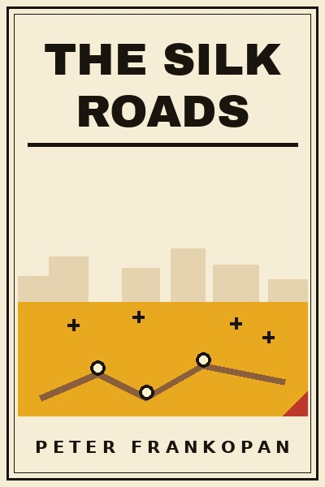
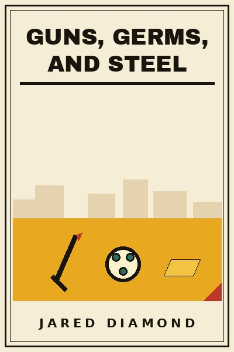

Library › The Silk Roads vs Guns, Germs, and Steel
The Silk Roads vs Guns, Germs, and Steel: Which Should You Actually Read?
Both books live on the same shelf: History. Both are free to read here, in full, right now. The Silk Roads (2015, Peter Frankopan) argues: World history is not the story of Greece, Rome and the West, it is the story of the roads through Ce… Guns, Germs, and Steel (1997, Jared Diamond) argues: Why did Eurasians conquer the Americas and not the reverse? Not biology or genius: the accident of g…

The Silk Roads
Frankopan recentres the globe: Persia, Central Asia and the routes between Constantinople, Baghdad, Samarkand and China, not the Atlantic, drove the world's wealth and ideas for most of recorded time. Silk, spices, slaves, silver and, above all, the desire for
READ THE SILK ROADS FREE →
Guns, Germs, and Steel
Diamond answers Yali's question (why did white men build so much cargo?) with a chain of causes rooted in geography: the Fertile Crescent's edible plants and large domesticable mammals enabled farming; farming fed specialists, states and, crucially, proximity
READ GUNS, GERMS, AND STEEL FREE →⚖ The Straight Answer
Read The Silk Roads if you want a new history of the world. the centre of the world was never europe.
Read Guns, Germs, and Steel if you want the fates of human societies. history's haves and have-nots were made
The honest order for most readers: start with The Silk Roads for the base, then go deeper with the other. Both summaries are free, no paywall, in 26 languages.
Every summary is free: lessons, examples, action steps, audio in your language.